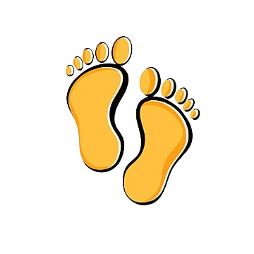
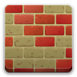

UD 1: Introducció al Hacking ètic
Inicia't en el mon del hacking descobrint les seues bases.

UD 2: Recopilació / Footpringing
Coneix les formes de recopilar informació d'un objectiu.
UD 3: Enumeració / Fingerprinting
Explora les eines d'enumeració de sistemes i serveis.
UD 4: HE a llocs Web
Domina les eines per accedir vulnerant llocs web
UD 5: HE a Xarxes i Sistemes
Descobreix com accedir a sistemes de tercers mitjantsant el hacking a xarxes i sistemes

UD 6: Consolidació de sistemes compromesos
Implementa tècniques per consolidar i utilitzar sistemes compromesos
UD 7: HE a comunicacions sense fil
Apren a vulnerar xarxes sense fils per accedir a sistemes de tercers